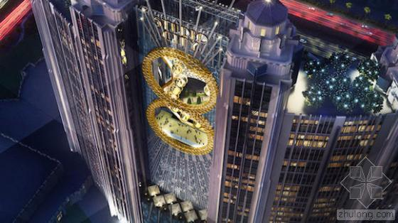
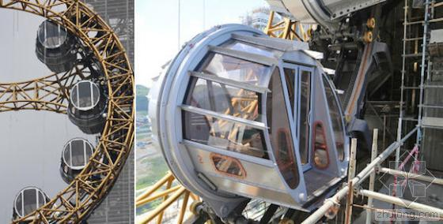
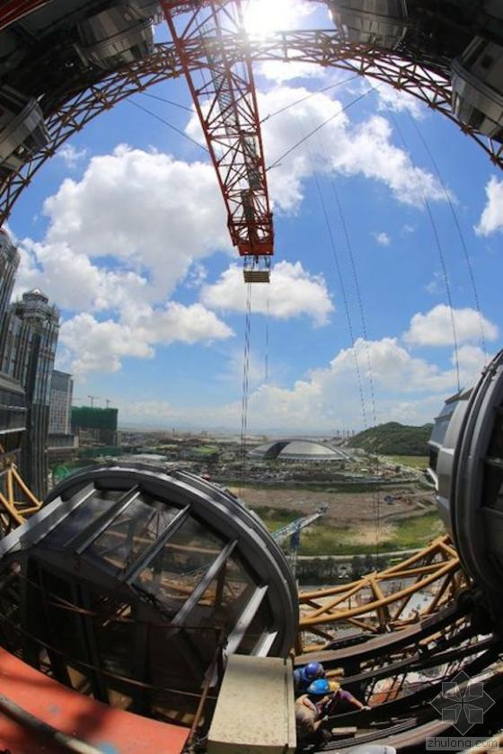
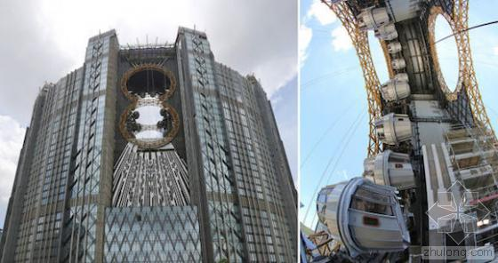

摘要：在澳门的金光大道上，世界上第一座“8”字形的摩天轮正在进行机械测试。这座即将成为亚洲最高的摩天轮高130米，仅次于拉斯维加斯的“疯狂转轮”和英国泰晤士河畔的“伦敦眼”。
这座摩天轮位于综合性娱乐休闲度假村“新濠影汇”两栋双胞胎酒店的中间。远远望去，仿佛一个大大的金色“8”字悬挂在空中。

它拥有17个蒸汽朋克主题的座舱，每个座舱可容纳10人。游客从酒店的23层登上座舱，每次围绕“8”字形轨道运转需要15分钟以左右。
从座舱望出去，澳门的城市风景一览无余。
这座摩天轮由总部位于列支敦士登的IntaminAmusementRides团队设计，刚于5月开幕的“奥兰多之眼”就出自他们之手。
它是世界上第一座“8”字形的摩天轮，人们希望它能为这座造价32亿美元的度假村吸引更多的游客。该度假村将于今年9月正式开幕。